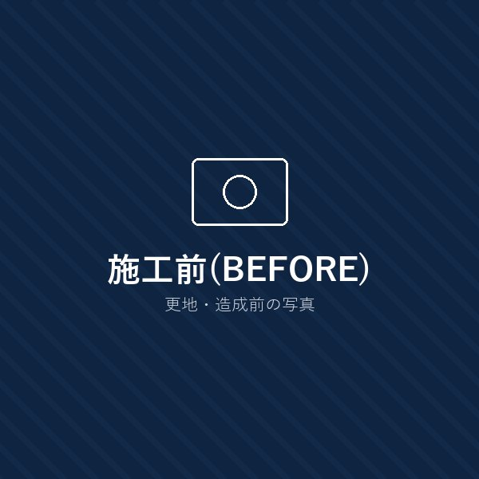
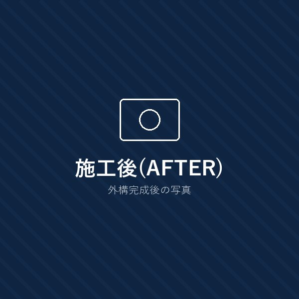
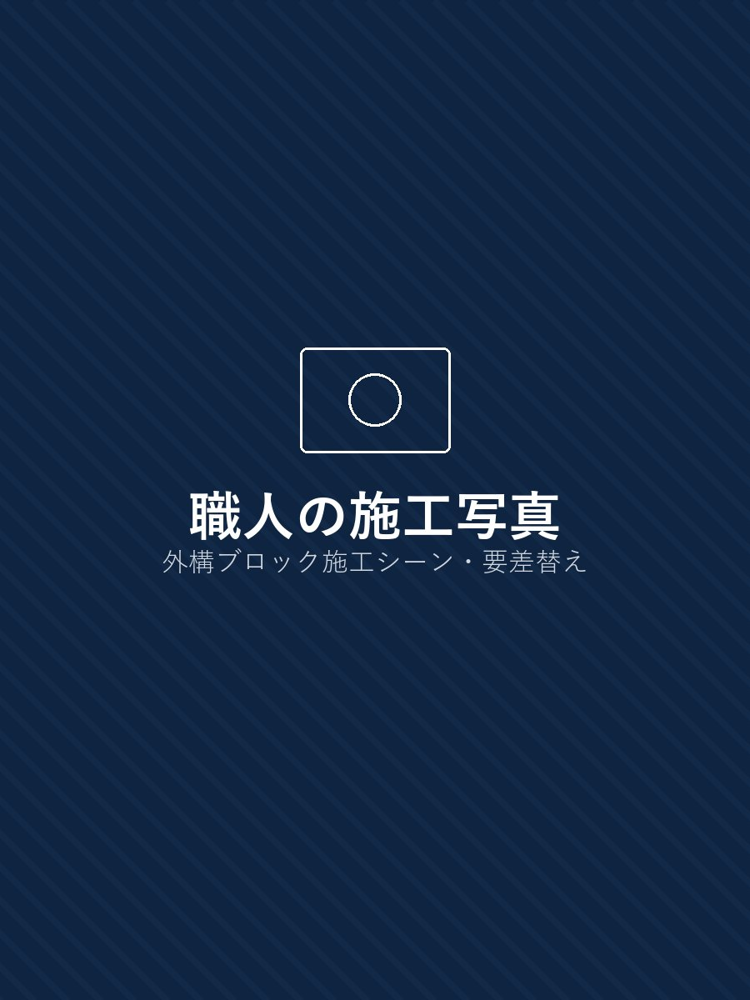
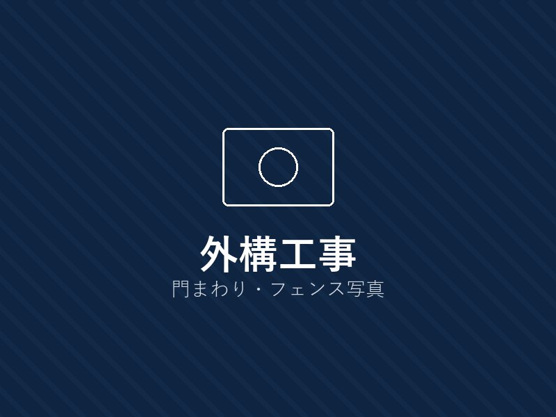
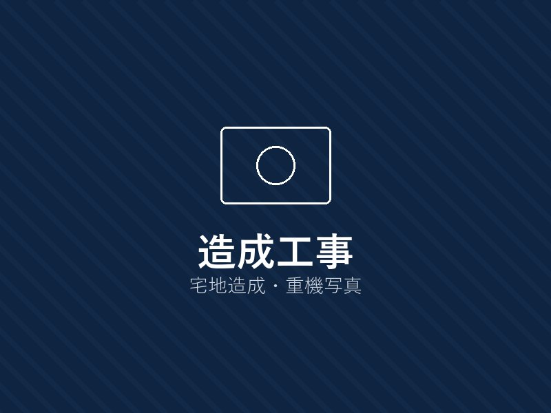
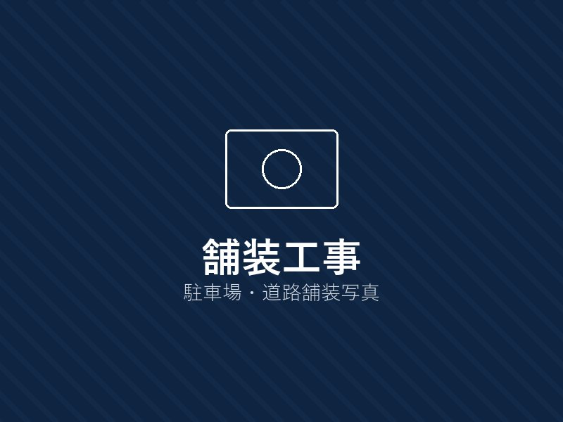
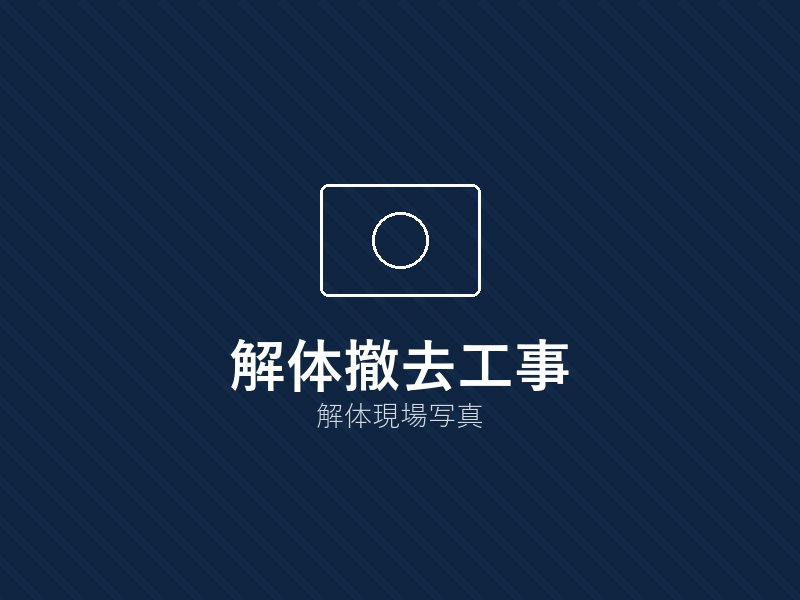
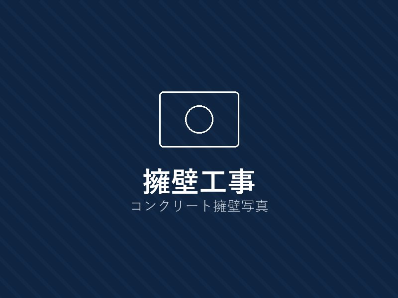
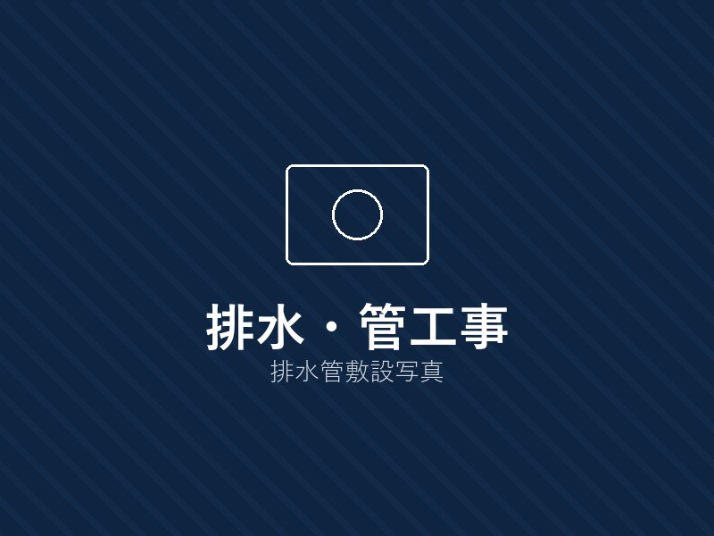

対応エリア
○○市・○○市・○○市
を中心に迅速対応！
暮らしと街を、
足元から強くする。
外構・造成・舗装・解体まで、地域を知る職人が責任施工。
住宅まわりの小さな工事から法人・公共工事まで幅広く対応します。
BEFORE

AFTER


LINE・フォームから24時間受付中！
受付時間 8:00〜18:00（相談のみOK） 電話で今すぐ相談する- 相見積もり歓迎
- 相談のみOK
- 強引な営業なし
対応工事
-

外構工事
門まわり・フェンス・アプローチなど
-

造成工事
宅地造成・整地・擁壁工事など
-

舗装工事
駐車場・道路・アスファルト舗装など
-

解体・撤去工事
住宅・ブロック塀・カーポートなど
-

擁壁工事
安全性の高い擁壁を設計・施工
-

排水・管工事
雨水・排水設備の設置・改善
施工実績
1,200件
以上
創業
25年
安心の実績
最短
即日
現地調査対応